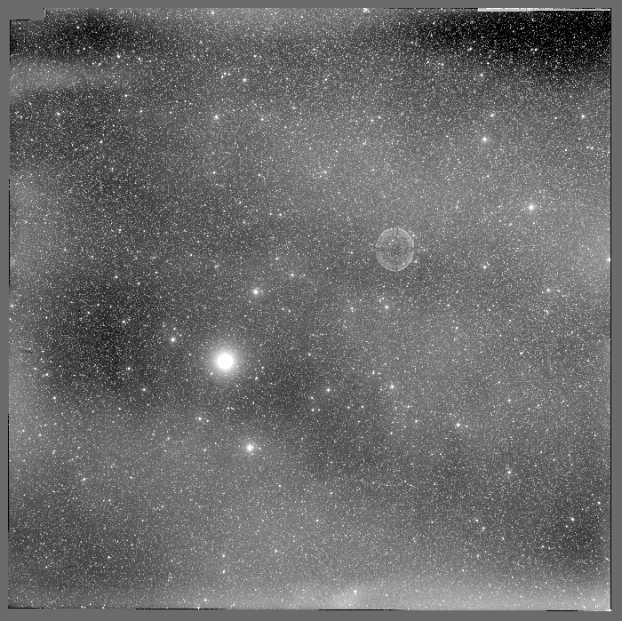

How was the measurement made?
We use the catalogue of 107,875 transients on 635 red plates that the VASCO team released with their shadow analysis, together with VASCO-ML’s rating of how likely each transient is to be real. Each transient is assigned to a plate based on its position, and every plate is analysed based on its corrected date and time (see below).
The shadow and nuclear tests count each transient by its rating, as VASCO’s 2026 analyses do; in the shadow test, counting every transient once leads to the same conclusions. The alignment test counts every transient once.
Within a plate, transients are not spread evenly: they grow denser towards the edges. This rise is background, from the plates themselves or from how the catalogue was built, not glints, and it would distort a comparison of the shadowed part of a plate with the rest. In the shadow test, the share of a plate’s transients expected in its shadowed part, with no shadow effect, therefore comes from the average density of transients at the same locations on the plates that Earth’s shadow never reaches, rather than from the shadowed part’s share of the plate’s area. Across plates, counts vary according to where each plate pointed on the sky, so in the nuclear test, which compares plates with one another, each plate is compared with the count expected from its pointing (see below).
Every result is judged against chance based on data-driven nulls: the real shadows moved onto other plates for the shadow measurement, shifted calendars of US tests for the nuclear measurement, and random catalogues built from the real transients for the alignment measurement. Every input, setting, and line of code used to produce the results herein is published along with this page.
The Palomar Sky Survey
Images were taken on plates using Palomar’s 48-inch Schmidt telescope, which was built to photograph wide areas of sky. Each plate is a sheet of glass 14 inches square, and covers a patch of sky 6.5 degrees across (about thirteen full Moons). Every patch was photographed through both a blue and a red filter, with red exposures lasting 40 to 60 minutes. Copies of the plates were scanned in the 1990s, and astronomers now work from those scans. One of the red plates is shown in Figure 1.

Figure 1. Plate XE344 is one of the survey’s red plates. It was photographed on 9 August 1954, and is centred on right ascension 22h 39m and declination +30.8 degrees (the sky’s equivalents of longitude and latitude). Its scan is 14,000 pixels across, each covering 1.7 arcseconds of sky, and is shown here at a twentieth of that resolution.
The brightest star, left of centre, has a faint ring on the opposite side of the centre. The ring is a ghost image of the star, created by light reflecting inside the telescope.
When was each plate taken?
The date of each plate is usually taken from the digitised archive at the Space Telescope Science Institute. This archive stores dates in short blocks of text called headers, which are attached to each scan.
We have found that around 75% of plates have archive dates which are one day early. Since various statistical tests in the following work rely on knowing when each plate was taken, we have checked the date of every plate and made corrections where required.
Plate labels
The observer wrote each plate’s number and date by hand, and the writing was photographed onto the edge of the glass. Since observing nights spanned two calendar days, observers wrote both dates; for example, “Nov 29/30 1951”.
Astronomers keep time using Universal Time (the clock at Greenwich), which is seven or eight hours ahead of California depending on daylight savings.
Exposures began after dark in California, when it was already past midnight in Greenwich, so the second date shown on the plates is the correct one. For the two example plates in Figure 2, we find that the archive dates incorrectly use the first rather than the second written date.

Figure 2a. Plate XE356, hand-labelled “E-441 Nov 29/30 1951” by the observer. In the archive header, the date is incorrectly assigned as 29 November.

Figure 2b. Plate XE617, hand-labelled “E-1595 April 8/9 1956” by the observer. The archive date is incorrectly stored as 8 April.
Using asteroid trails to check dates
Asteroids move relative to stars, typically by around half an arcsecond per minute. During long exposures, asteroids thus appear as short trails, while stars appear fixed as the telescope tracks them. Using NASA’s JPL Horizons service, we can determine the position of every known asteroid on any night in the 1950s with high precision.
For two example plates in Figure 3, we show the trail a known asteroid would follow on the archive’s date (red dashed line) and where it would be a day later (red solid line). Over the course of a day, an asteroid moves around a quarter of a degree, so the two positions are well separated on the plate.
Using the archive’s date, we find no trail where the asteroid is predicted to be. One day later, however, we find trails left by asteroids at their expected positions. On the plates we checked, 72 asteroid trails across 44 plates appear one day after the archive date. On another 14 plates, 22 trails confirm that the archive date is correct, so the method is able to distinguish between cases.


Correcting the dates
Palomar numbered the red plates in the order they were taken. The one-day error affects long, unbroken runs of plate numbers, listed in Table 1. Palomar’s own log of the survey also survives. It records each night by its evening date, so the correct date in Universal Time is the day after the log’s date. For some plates, the log’s plate number differs by one from the number on the label, so matching by number can miss a plate or take another plate’s entry. We therefore match each plate to the log based on where the telescope pointed.
For the 110 plates also dated by an asteroid trail or a handwritten label, the log agrees on 108. The two exceptions are typing errors in the log, where we take the date on the label.
Where a plate has more than one source for its date, we take the most direct source available, in this order:
- Its handwritten label: 55 plates;
- An asteroid trail: 55 plates;
- Palomar’s log, matched to the plate by where it pointed: 517 plates.
Of all the plates, seven do not follow the pattern of their run, and are listed in Table 1. Of these, five are wrong by months or years, and two by a single day. Each is corrected from its label, and all of the date corrections can be found in our code repository.
Table 1. Most archive dates are one day early, spanning long runs of plate numbers. Only seven plates break the pattern of their run, five of them by months or years.
Checking the time of each exposure
The Earth shadow test requires the time of each exposure as well as its date. As seen from Palomar, Earth’s shadow at the height of a geostationary orbit (36,000 kilometres up, where an orbit takes one day) moves against the stars by up to about 2 degrees an hour as the observatory turns with the Earth. As such, an error of half an hour in a plate’s time would misplace the shadow by up to a degree.
Each header gives the start of the exposure in hours and hundredths of an hour, rather than in hours and minutes (for example, 06:82 means 06:49). Where the header and the log give different times of day, as is the case for nine plates, we take the time that the plate’s asteroids support. Where the asteroids do not determine the time, we assign the time that is consistent with the rest of the night: the exposure must lie wholly between the end of evening twilight and the start of morning twilight, must not overlap another plate’s exposure, and must preserve the order of the night’s plate numbers.
We then checked every plate’s time against the sky. A known asteroid moves along a predicted track during the exposure, so if a plate’s time is wrong, the asteroid is found displaced along its track by its speed multiplied by the error. The asteroids show that the written times are later than the true start of each exposure by 0.6 to 1.2 minutes, depending on the year, and by the same amount at every hour of the night (Figure 4). The asteroids also reveal three plates whose written time, in the header and the log alike, was wrong by 5 to 22 minutes.
We therefore calibrated every plate’s time to the sky. 107 plates contain enough asteroids to take their times from those asteroids, and the remaining 528 take the median offset found for their year. After this calibration, the median plate’s time is known to within 0.5 minutes (68% interval).
Figure 4. Asteroids put the start of each exposure at around 0.8 minutes before their written times, varying from 0.6 to 1.2 minutes between years but not with hour of the night. Single asteroid trails scatter by about 0.8 minutes about their plate’s offset.
Number of transients varies greatly across plates
The 635 plates in the catalogue show a large degree of variation in how many transients they exhibit, ranging from 1 to 4,166 (Figure 5).
Figure 5. Each tile shown represents one plate, coloured on a logarithmic scale according to the number of transients in its central 6 x 6 degree area. Plates along the Milky Way hold fewer transients, as do plates close to a patch near Taurus and Perseus.
More variation than expected by random chance
VASCO’s Earth shadow test (see below) scores its result by treating every transient as an independent event: each has the same small chance of falling inside the shadow, regardless of other transients.
If transients were truly independent of one another and spread uniformly over the sky, plates would differ only by counting noise. An average plate holds 170 transients, and the counting noise on that is around its square root (13), so most plates would hold between 144 and 196 transients.
However, only 105 of the 635 plates fall within this range (Figure 6). The actual counts spread smoothly, from a handful of transients to several hundred, and on three plates more than 1,000. Some of this variation follows from where each plate points on the sky, as the sky map above shows.
How many transients a plate holds depends on the plate itself, and thus transients cannot be treated as fully independent events. A count drawn from only a few plates, such as the 9 reached by Earth’s shadow, can therefore vary considerably more than counting noise suggests.
Figure 6. Transients per plate in VASCO’s catalogue. If plates differed only by counting noise, almost all of them would fall in the shaded range about the average; only 105 of the 635 plates do.
More transients at plate edges
Across the middle of a plate, transients are spread evenly. Towards the edges they grow denser, reaching over two times the central density (Figure 7), and 87% of the plates are denser near their edges than at their centres. The control positions that the VASCO team spread uniformly over each plate show no such rise.
A plate’s edges are determined by its size and shape, not by anything in the sky. Wherever the telescope points, real sources have no reason to gather towards the edges of a plate. The observed rise may come from the plates themselves, and how the catalogue was built. A detection counts as a transient only if nothing in the Gaia, Pan-STARRS, or WISE catalogues lies within 5 arcseconds of it (Solano et al. 2022). Towards the edges of a plate, star images blur and their measured positions are less accurate, so real stars may miss that match and enter the catalogue as transients. Watters et al. (2026) find the same rise towards plate edges and corners in other lists of transients, and find that transients clump together on most plates.
Figure 7. The density of transients across the plate (above), and by distance from the centre of the plate (below), relative to the density near the centre, with every plate counted equally. Transients grow denser towards the edges, while VASCO’s control positions, spread uniformly over each plate, stay level. The band shows the 68% range when the plates are resampled.
Fewer transients near the Milky Way
A point of light is kept as a transient only if no modern catalogue lists anything within 5 arcseconds. Near the Milky Way, stars are more crowded, causing a greater proportion of candidates to fail the 5 arcsecond threshold.
A typical plate within 5 degrees of the Milky Way holds 28 transients. Counts rise steadily away from the galactic plane (Figure 8): beyond 40 degrees, a typical plate holds around 190 (seven times as many).
Figure 8. Transients on each plate against the plate’s distance from the plane of the Milky Way. The line follows the typical plate, and the band holds the middle half of the plates. Plates near the Milky Way hold far fewer transients.
Where a plate points shapes how many transients it has
The number of transients retained on a plate depends on where it pointed. Crowding near the Milky Way and dust both remove detections, while plates near the ecliptic, the band of sky that asteroids follow, gain some from asteroids missing from modern lists. These effects come from how the catalogue was built.
Clouds of dust in our own Galaxy dim everything behind them, and the sparse patch near Taurus and Perseus on the sky map (Figure 5) lies behind some of the closest dust clouds.
To separate dust from crowding, we compared plates more than 20 degrees from the Milky Way, where stars are not crowded. The 31 plates that look through the most dust hold a median of 89 transients, compared to 183 held by the 252 plates which look through the least dust. Dust covers only part of the Taurus–Perseus patch, so it cannot explain the whole shortfall there; we have not identified what does.
One further effect is tied to particular plates rather than to the sky. The 59 plates centred on the celestial equator, the southern edge of the catalogue, hold about 33% as many transients as other rows of plates once the factors above are accounted for. Where these plates overlap their northern neighbours, the same patch of sky yields only about 41% as many transients on the equatorial plates. The cause therefore lies in the plates themselves or how they were processed, not in the sky. The shortfall is already present in the list published by Solano et al. (2022), and is not explained by any of the recorded properties of the plates.
To assign each plate an expected number of transients, we combine these factors in a single fit across all plates, which we call the pointing model: distance from the Milky Way, dust averaged across the plate, distance from the ecliptic, whether the plate lies in the equatorial row, and the share of faint Gaia stars found on the plate’s scan, which measures how deep the plate reaches. Together, these factors account for 39% of the variation in plates’ transient counts, measured on a logarithmic scale (Figure 9). In the sections on Earth’s shadow and nuclear tests, we use these expected counts to compare plates on equal terms.
Figure 9. Transients on each plate against the number the pointing model expects. With the plates grouped by their expected counts, each group’s average count is close to its expected count. Individual plates scatter widely about the model, which accounts for 39% of the variation in plates’ counts on a logarithmic scale.
Do transients avoid Earth’s shadow?
An object in orbit is visible only via the sunlight it reflects. When orbiting objects pass into Earth’s shadow, they should therefore go dark.
VASCO considered objects in geostationary orbit (36,000 kilometres up), where a single orbit takes one day and a satellite stays above a point on the equator. At this height, Earth’s shadow covers a disc of sky 17.4 degrees across, centred on the point opposite the Sun. If some transients are glints from objects in orbit, the part of a plate inside the shadow should show fewer transients than the same area of sky elsewhere. VASCO reported such a shortfall in their own catalogue.
In their test, VASCO placed the shadow as seen from the centre of the Earth. The telescope, however, sat on the Earth’s surface, 6,400 kilometres from its centre; from this point of view, an object 36,000 kilometres up appears in a different direction. On plates Earth’s shadow reaches, the shadow falls 2.1 to 3.6 degrees from where the Earth-centred frame puts it. In our analysis, we therefore place the shadow as seen from Palomar.
Seen from Palomar, the shadow also moves during an exposure: as the Earth turns, the observatory travels more than 1,000 kilometres in 50 minutes, and the shadow’s edge slides 1.4 to 1.8 degrees across the plate. A glint lasts a fraction of a second, occurring at an unknown moment during the exposure. Therefore, we count each transient according to the share of the exposure that its plate location spent in shadow.
The shadow’s edge is also not sharp: between 8.42 and 8.96 degrees from its centre, the Earth obscures only part of the Sun, and a glint there would be dimmer. Following the shadow through each exposure requires accurate plate times. Since our calibration to asteroids fixes the median plate’s time to within 0.5 minutes, the shadow is placed to better than a tenth of a degree.
Flaws in the photographic emulsion, dust on the glass, and marks from copying have no connection with where Earth’s shadow fell. If significantly fewer transients fall inside the shadow than the differences between plates can explain, this could indicate objects in orbit. With the few plates that Earth’s shadow reaches, such a shortfall must be judged against how far the count can vary by chance.
Repeating VASCO’s measurement
VASCO’s shadow test (Villarroel et al. 2025) counts the transients that fall inside Earth’s shadow, and compares the count with uniform control positions placed on the same plates. We first repeat the test as VASCO made it: the plates of their listed observing nights, their time for each plate, the shadow seen from the centre of the Earth with a sharp edge at a single instant, and each transient counted once.
With the public catalogue and control positions, 448 of the 93,149 transients fall in shadow, against 671 expected from the controls, a ratio of 0.67. VASCO’s binomial model puts this shortfall at 5.6 standard deviations. Their paper reports 349 transients in shadow, 180 control positions per plate, and 7.6 standard deviations; the public files hold 100 control positions per plate and give a larger count in shadow, and we have not found the cause of the difference.
We then change one step at a time (Table 2). Seen from Palomar rather than from the centre of the Earth, the ratio becomes 0.80. With every plate of the catalogue assigned its corrected date and time, it becomes 0.57. With the shadow moving across each plate during the exposure, its edge following the share of the Sun’s disc that the Earth hides, and each transient counted by its share of the exposure in shadow, it becomes 0.58. Counting each transient by its rating, as VASCO’s 2026 analyses do, gives 0.53, which the binomial model puts at 7.4 standard deviations.
The binomial model treats every transient as independent. As shown above, the number of transients on a plate depends on the plate itself, so a count drawn from the few plates the shadow reaches varies far more than the model allows. Shuffling the real plate times among the plates, which moves the shadows onto other plates, shows how far the count varies by chance. Shuffled times give a ratio at least as low as 0.53 about 1 time in 6. When each transient counts fully, rather than by its rating, shuffled times also give a ratio at least as low as 0.58 about 1 time in 6.
The pooled count also depends on which plates the shadow happened to fall on, and whether those plates are rich or poor in transients. In the rest of this section, we therefore compare shadow with sunlight on the same plates.
Table 2. VASCO’s shadow count, repeated and then changed one step at a time, with each step keeping the changes above it. From the fourth step, each transient is counted by the share of the exposure its location spent in shadow; in the fifth, we also count by VASCO's machine-learning rating.
The expected counts come from VASCO’s control positions, and the standard deviations from VASCO’s binomial model, which treats every transient as independent. The final row judges the last ratio against shuffled plate times instead.
Plates intersecting Earth’s shadow
As seen from Palomar, and using our corrected dates and times, Earth’s shadow reached 9 plates during their exposures (Figure 10). Throughout the shadow test, we use the central 6 x 6 degrees of each plate, with each transient counted by its rating.
The total area that spent time in shadow equates to 3.5 plates’ worth of sky. However, one of the plates has no part that stays sunlit throughout the exposure, so it has nothing sunlit to compare with. On two other plates, the shadow touches less than 1% of the total plate area. Across the 6 remaining plates, the transients total 255 counted by rating, of which 73.5 fall in shadow (each also counted by its share of the exposure in shadow).
Figure 10. Seen from Palomar, Earth’s shadow reached 9 plates. The 6 outlined plates have area both in shadow and in sunlight, and enter the measurement.
Taking a closer look at the plates in shadow
Figure 11 shows the 6 plates that enter our measurement, with the position of every transient in VASCO’s catalogue indicated.
The plates hold very different numbers of transients. Counting each transient once, XE415 holds 301 transients, while XE472 holds only 7. Within a plate, transients often bunch into clumps and gather along some edges, while some plates are almost empty in some regions.
During each exposure, the shadow’s edge slid across the plate. In Figure 11, a dashed blue line marks the shadow’s edge at the start of the exposure, and a solid line marks it at the end. Between these two lines, the chance that a transient appeared while its location was in shadow rises smoothly from 0 to 1.
Figure 11. Plates entering the shadow test. Beside each plate name, the proportion of the plate in shadow across the exposure is indicated. The number of counts in shadow, as well as the expected counts under no shadow effect, are also shown.
Transients are counted according to their rating, as well as by the proportion of the exposure that their location spent in shadow. The latter accounts for the fact that Earth’s shadow moves during an exposure, as shown by the dashed and solid blue lines.
Searching for a deficit in Earth’s shadow
We treat the transients on a plate as two populations. The first is a background of artefacts, such as flaws in the emulsion, dust on the glass, or marks from copying, which Earth’s shadow cannot affect. If some transients are glints from objects in orbit, those glints would be spread evenly over the plate, since where they fall has no connection with the plate itself. Such transients would vanish wherever their location fell in Earth’s shadow.
The test therefore counts the transients that fall in shadow on each plate, and compares the count with the number expected if Earth’s shadow made no difference. We express the result as a ratio: the transients observed in shadow, divided by the number expected.
With no shadow effect, the ratio should be 1. If some transients are glints that vanish in the shadow, the ratio falls below 1, but by less than the glints’ share of the total transients. This is because the expected count is derived from the number of transients recorded on the plate, and that number already lacks the glints that vanished in shadow (Figure 12).
Figure 12. (a) 400 artefacts, which are denser towards the edges as observed on real plates (Figure 7). (b) 171 glints spread evenly, making up 30% of all transients. (c) In Earth’s shadow there is no sunlight to reflect, so the 104 glints in that area never appear (hollow circles). (d) The transients recorded in shadow, divided by the number expected there with no effect: 1.01 with artefacts alone, 0.84 with the glints.
Transients falling in the region where the shadow passed during the exposure count towards both shadow and sunlight. For example, if a transient is located somewhere that spent one third of the exposure in shadow, that transient counts one third towards shadow and two thirds towards sunlight.
Even with no shadow effect, the shadowed part of a plate need not hold a share of its transients equal to its share of the area, because transients grow denser towards the edges of most plates. This rise is part of the background, whether it comes from the plates themselves or from how the catalogue was built; glints, which have no knowledge of where plate edges fall, cannot produce it. An expectation based on area alone could thus find an excess wherever the shadow covered an edge, and a shortfall wherever it covered the middle.
We therefore take the expected share from the plates that Earth’s shadow never reaches. Averaged together, these plates provide a map of where on a plate transients tend to lie (see Figure 7). For each plate the shadow did reach, we lay its shadow on this map: the share of the map’s transients that falls under the shadow is the share of the plate’s transients expected in shadow. Plates with no parts falling in sunlight throughout the exposure, or with less than 1% of their area in shadow, offer no useful comparison and are left out.
We then separately sum the observed and expected counts over the plates, and take their ratio. Each plate’s expected count comes from its own number of transients, so a plate that is rich or poor in transients overall cannot by itself create a shortfall. Plates with more transients in their shadowed area carry more weight, and plates with little area in shadow count for little.
This comparison is a standard statistical method, known as a score test (Berman 1986, Applied Statistics). Figure 13 shows the ratio measured for each plate, and for all plates together.
Figure 13. Transients observed in Earth’s shadow, divided by the number expected with no effect. The ratio for all plates together is indicated by the blue line. The uncertainties shown are from counting statistics, which underestimate the true level of uncertainty.
Finding the true uncertainty
Across the six plates, 73.5 transients fall in shadow, against 86.8 expected, a ratio of 0.85. Counting statistics, which allow for each transient’s rating and each plate’s total but treat every transient as independent, would put this shortfall at 3.2 standard deviations. However, transients are observed to clump within plates, so the count in any one part of a plate varies far more than counting allows.
To measure the true uncertainty, we moved each real shadow onto other plates that Earth’s shadow never reached, which were chosen to hold a similar number of transients at a similar declination, since transients spread differently over plates at low declination. These 20,000 replicas keep the specific shadow geometries, but apply them to transients with real clumps and edge effects on plates where Earth’s shadow never fell, so they can contain no shadow effect.
Repeating our measurement on these replicas gives a median ratio of 0.99, with the middle 68% of results falling between 0.86 and 1.11. Shortfalls at least as large as the one observed in the real data are encountered by chance around 1 time in 7.
As a check, shuffling the real plate times among the plates, which moves the shadows elsewhere, gives a shortfall this large about 1 time in 4. Such shuffles introduce shadow geometries that do not match the real measurement, so we judge the measurement against the replicas above instead.
To set a limit, we added simulated glints to the replicas, as in Figure 12: spread evenly over each plate, and absent wherever their location was in shadow. We repeated this for glints making up a range of shares of the transients. When glints make up 53% of the transients, only 5% of replicas give a ratio of 0.85 or higher, so larger shares are ruled out at 95% confidence. A ratio of 0.85 is thus consistent with no glints, but also with glints making up as large a share of the transients as shown in Figure 12.
Each plate’s time is known only to within the range that its own asteroids, or the clock offset measured for its year, allow. Drawing every plate’s time many times from that range moves the ratio by less than 0.01; the limit set above accounts for this systematic uncertainty.
Figure 14. Replicas of the measurement give a shortfall at least as large as the measured one about 1 time in 7, so the measured shortfall is not statistically significant beyond chance.
When glints make up 53% of the transients (blue), only 5% of replicas give a ratio as high as the measured value. As such, larger shares than this are ruled out at 95% confidence.
Checking the result
The verdict holds under every choice we tested, although the observed shortfall rests largely on one plate:
- Without XE415, which holds the most transients in shadow and so carries the most weight, the ratio becomes 0.99; leaving out any other plate gives 0.81 to 0.85.
- With a flat map, or one built from plates below a declination of 25 degrees, replicas match the shortfall in both cases about 1 time in 8.
- Choosing replica plates by their number of transients alone, or by the number of transients the pointing model expects (Figure 9), moves the 95% limit to 54% or 57%.
- Counting every transient fully, rather than by its machine-learning rating, gives 0.88, matched by chance about 1 time in 6.
- Retraining VASCO-ML with VASCO’s own code, in 52 runs over eight settings, gives ratios ranging from 0.83 to 0.88.
- Fitting each plate’s density of transients, rather than counting them, gives a density in shadow 0.72 times that in sunlight, matched by replicas about 1 time in 7. A second fit, which measures the share of transients that are glints, gives 13%. The first fit detects added glints about as often as the count, and the second less often.
Pooling the plates
As Dr Beatriz Villarroel (VASCO lead) suggested, we also measured the shortfall by pooling the plates, including those wholly or barely in shadow. The pooled count in shadow is 0.34 times the count that the pointing model expects there, and 0.53 times the count expected from VASCO’s uniform control positions (the last step in Table 2).
A pooled count compares the transients in shadow on a few plates with the transients expected from all plates, so its value with no shadow effect depends on how many transients the shadowed plates happen to hold.
To measure this dependence, we repeated the pooled counts on the replicas, which contain no shadow effect. Against VASCO’s control positions, the replicas’ median ratio is 0.59 when the replica plates are chosen to hold a similar number of transients, and 0.96 when they are chosen to have a similar count expected by the pointing model. How often the replicas give a ratio as low as the measured one therefore depends on this choice: from 2 times in 5 to 1 time in 14 against the control positions, and from 1 time in 20 to 1 time in 69 against the pointing model.
Most of the pooled shortfall comes from two plates, XE472 and XE532. The pointing model expects these plates to be rich in transients, yet they hold only 3% of the number it expects, in sunlight as well as in shadow. Since their shadowed areas are large, they carry 65% of the count the pointing model expects in shadow. Without them, the ratio against the pointing model rises to 0.95, and the ratio against the control positions to 0.83.
A shortage of transients across the whole of a plate cannot have been caused by Earth’s shadow. Choosing replica plates by their number of transients uses each plate’s observed total, which a genuine shadow effect would lower. However, a shadow effect could lower a plate’s total only by the transients lost in shadow, far less than the shortage on these two plates.
Our count compares the shadowed part of each plate with that plate’s own total, so a plate that holds few transients overall does not lower it; without either of these two plates, it stays between 0.81 and 0.85, as the checks above show. With no effect, its median on the replicas stays between 0.98 and 1.00, however their plates are chosen.
Dr Villarroel’s recommendations for replications (VASCO project site, July 2026) ask for normalisation by total counts, and for controls that do not use the observed distribution of transients. On the first, we report the counts normalised by total counts above, but take the count within each plate as our measurement, because the pooled values with no effect depend on which plates are compared. On the second, our map comes only from plates that Earth’s shadow never reaches, so it cannot hold a shadow signal; uniform positions in place of the map, one of the checks above, give replicas that match the shortfall 1 time in 8.
Sensitivity and a combined fit
Dr Villarroel also noted that a comparison within plates sets aside each plate’s total, including that of XE422, the plate wholly in shadow, and so may detect a genuine shortfall less often than a pooled count. To test this, we added artificial glints making up 30% of the transients, and counted how often each measurement found a shortfall beyond what 95% of replicas without glints give (a higher share means a more sensitive measurement):
- Our count: 16% of replicas;
- The pooled count against VASCO’s control positions: 28%;
- The pooled count against the pointing model: 24%.
The pooled counts indeed detect the added glints more often. However, a measurement counts as detecting glints only when it passes a threshold set by the replicas without glints. For the pooled counts, this threshold shifts depending on how the replica plates are chosen, as shown above; by contrast, the threshold for our count does not. With so few plates, every measurement misses glints making up 30% of the transients more often than it finds them.
Our count cannot use XE422, the plate wholly in shadow, because no part of it stays in sunlight for comparison. A pooled count can use its total instead. However, XE422 holds 1.5 times the number of transients the pointing model expects, so its total shows no shortfall either.
Dr Villarroel also suggested combining the comparison within plates with each plate’s total, judged against the pointing model, so that every plate the shadow reaches contributes. This combined fit gives a density in shadow 0.72 times that in sunlight; replicas give a value this low about 1 time in 5 to 1 time in 8. This method detects added glints in 17% of replicas, against 16% for our count. The plate totals thus add little information, because a plate’s total typically differs from the pointing model’s expectation by about 82%.
Across the six plates with areas both in shadow and in sunlight, 73.5 transients fall in shadow against 86.8 expected, a ratio of 0.85. Replicas of the measurement on other plates give a shortfall at least this large about 1 time in 7, so no statistically significant shortfall is found in Earth’s shadow. The shortfall comes largely from one plate, XE415; without it, the ratio is 0.99.
The pooled counts give lower ratios, 0.34 against the pointing model and 0.53 against VASCO’s control positions. However, their values under no effect depend on which plates are compared, and most of their shortfall comes from two plates that hold few transients in sunlight as well as in shadow (an effect Earth’s shadow cannot cause). Without these two plates, the pooled ratios are 0.95 and 0.83.
Glints making up more than 53% of the transients are ruled out at 95% confidence. With only six plates, smaller shares cannot be ruled out.
Do transients fall in straight lines more often than chance allows?
A flat object tumbling in orbit would flash each time it caught the Sun, leaving a line of points during a long plate exposure. We search for such alignments among the 100,626 transients of VASCO’s catalogue that fall within the central 6 x 6 degree regions of each plate.
Given a large sample of unevenly spread points, many will line up by chance. Three questions naturally arise:
- Can the search find alignments in every direction?
- Does the catalogue contain more alignments than expected by random chance?
- How many genuine glint tracks does a fit to the catalogue find?
Searching for alignments in all directions
A satellite at geostationary height stays nearly fixed above the observatory while the telescope follows the stars, so on the plate it moves close to east–west. Any line of glints it leaves would therefore lie within a few degrees of east–west; a search for glints must find lines in that direction as readily as in any other.
The same alignment task often arises in particle physics, where the paths of charged particles must be reconstructed from hits they leave in a detector. The simplest tracking method fits a straight line through a set of points, resulting in a track candidate. The quality of each candidate can be assessed by checking how far the points lie from the line of best fit. Such a method works equally well in all directions, including east–west when applied to this setting.
We tested the track search by adding 600 artificial glint tracks to the catalogue at each of 17 fixed angles, ranging from east–west to north–south. At every angle (Figure 15), the search recovers between 80% and 88% of them as high-quality track candidates (a track score of 1 in 1,000 or better, as defined below).
Figure 15. The search finds a similar share of artificial glint tracks in every direction (80% to 88%), with no drop in the east–west direction where the glints of a geostationary object would lie.
Fitting every track candidate
We build track candidates from pairs of transients up to 15 arcminutes apart. Each pair marks the two ends of a track, and the transients lying closest to the line between them are added, giving three to six transients in total. We then fit a straight line through each candidate, and measure how closely its transients follow it.
Two sources closer than about 4 arcseconds (the width of a star’s image on the scans) blur into one, and two sources are separated reliably only beyond about twice that distance. We therefore leave out candidates with two transients closer together than 8 arcseconds.
The position of each transient on a scan is uncertain by around an arcsecond. As such, even points from a genuine straight track can stray from a true straight line. Each track fit is scored with a χ² per degree of freedom (χ²/ndof), which compares the points’ actual distances from the line with a one-arcsecond uncertainty. A genuine track gives a value near 1 or below. Points scattered loosely about the line give a much larger value. From χ²/ndof we take the χ² probability, the share of cases in which measurement errors alone would give a fit at least this poor. Only candidates with a χ² probability of 1% or more pass this straightness test and go on to be scored.
A good fit alone does not make a track stand out: in crowded parts of a plate, pure chance can cause transients to align frequently. We therefore assign each track candidate a track score, which measures how easily chance alone could produce it. The score uses four numbers, as Figure 16 shows: the candidate’s number of transients (k), its length (L), its width (w), and the number of transients in a box at least 10 arcminutes across around it (N). The lower the track score, the less often chance alone produces such a track. The idea and the formula match those VASCO used to judge their own candidates (Edmunds and George 1985).
Transients often come in close pairs: VASCO’s catalogue holds 4.3 times as many pairs of transients within 20 arcseconds of each other as the same plates would hold with their transients placed at random. Two transients this close fix a direction only loosely, so a third lying roughly in line with them makes a short track that looks stronger than it is. Lezama and colleagues (2015) developed a method for finding alignments among clustered points, and we follow it. We count a track’s transients in boxes 20 arcseconds long along the track, about the distance over which close pairs are unusually common, so that transients closer together than this count only once.
Candidates built from a set of six transients also yield candidates composed of any combination of three, four, or five of that set. Where track candidates share a transient, we keep only the best-scoring candidate, such that each transient counts once.
Figure 16. How the track score rates a track candidate on plate XE229. A candidate is scored only if it first passes the straightness test.
The track score, μ, is the number of tracks with k transients, at most L long and lying within w of a straight line, that we would expect if the N transients in the box were scattered at random, with n their density (Edmunds and George 1985):
μ = π N n (2nw)k−2 Lkk (k − 2)!
Measuring how often tracks arise by chance
Any catalogue of transients will hold tracks by chance, so finding track candidates proves nothing by itself. The proper test is whether the real data holds more strong track candidates than chance alone can produce.
This test requires a reliable background-only model: random catalogues that match the real data as closely as possible, except that they contain no genuine tracks. Since transients cluster on plates, and their surface density varies, a uniform random distribution cannot serve as this model.
We therefore created 1,000 random catalogues based on the real data itself. Each random catalogue keeps all of the plates from the real data, including the total number of transients on each and their tight groups of transients, while breaking up almost all alignments. Every lone transient is moved at random by up to 20 arcseconds; this is enough to break genuine lines, but small enough that each plate keeps its distribution of transients on larger scales.
Transients within 20 arcseconds of one another, either directly or through a chain of neighbours, form a group. Each group is moved as a single piece, turned at random and shifted by up to 20 arcseconds, and no transient is moved to within 20 arcseconds of another group. Because a group keeps its shape when it moves, a line formed within a group would also appear in every random catalogue, and the comparison could not tell whether it arose by chance. We therefore leave out any track holding three or more transients from one group, both in the real data and random catalogues.
To measure chance correctly, the random catalogues must satisfy two conditions:
- They must break up real tracks. To test this, we added 4,500 artificial tracks to the real catalogue, one at a time, and moved their transients in the same way the random catalogues move them. Of the candidates these tracks produce with a track score of 1 in 10,000 or better, only 3 in 100 survive the moving, and so would also appear in the random catalogues; at 1 in 1,000 or better, 8 in 100 survive. Any genuine excess of glint tracks would therefore still show at 97% of its true size (92% at 1 in 1,000). The fit we perform below allows for this absorption effect, track by track.
- They must not understate chance. If the random catalogues held fewer chance tracks than the real one, chance alone could look like a signal. We check this on the candidates that only just fail the straightness test, with a χ² probability between 1 in 1,000 and 1 in 100. A genuine glint’s track would pass that test, so these candidates are chance alignments, built from the same pairs, groups, and density of transients as the rest. With a track score of 1 in 1,000 or better, the real data holds one such candidate, against 1.1 on average in the random catalogues. At 1 in 100 or better, the real data holds 5, against 7.9 in the random catalogues. Within these small counts, the random catalogues show no sign of holding fewer chance tracks than the real data. Comparing the real data against the random catalogues could thus hide part of a real excess of tracks, but it cannot create a false signal.
Close pairs of transients require one further decision. A close pair could be background, such as a speck of dust that the detection software splits into two, in which case the random catalogues should move the pair as one piece. It could also be signal, such as two glints from one object, in which case the random catalogues should move the two separately.
The two cases cannot be differentiated in the real data, so the analysis should depend on it as little as possible. Counting transients within 20 arcseconds of each other along a track only once, as described above, reduces the dependence without removing it. With this counting rule, random catalogues that move close transients on their own hold 8.2 track candidates at 1 in 1,000 or better on average, and 5.5 when close pairs move as one piece. The random catalogues we use move close pairs as one piece, and so hold the fewer chance tracks of the two. Against them, an excess in the real data would stand out more, not less.
The real and random catalogues pass through the same analysis code, so track candidates are found in the same way in both.
Searching for an excess of tracks
With the background-only model in place, we compare the track candidates in the real data that pass the straightness test with those in the random catalogues. Genuine glints would appear as candidates scoring better than chance allows, appearing as an excess beyond what the random catalogues predict. We fit the real track score distributions for candidates of 3, 4, 5, and 6 transients (Figure 17), first with the background-only model, then with glint tracks added. A track of six transients also contains tracks of three, four, and five, so the four distributions are fitted together.
To model a genuine glint track, we added 1,500 artificial glint tracks of each number of flashes to the catalogue, one at a time, each with its flashes spread over 2 to 10 arcminutes, and scored each plate with and without its track. From these, we measure how a glint track would change the four track score distributions.
Figure 17. Comparing the real track score distributions in data (red) with the average of the random catalogues (grey). Across the full range of track scores (lower is better), and for each type of track from 3- to 6-transient, the real data holds about as many track candidates as random chance suggests.
The fit to VASCO’s catalogue finds no statistically significant excess of glint tracks. For tracks of 3, 5, and 6 transients, the fitted number of glint tracks is zero. For tracks of 4 transients, the fitted number is slightly above zero, but random catalogues give a number at least as large about 1 time in 4, so it is consistent with chance.
Converting this result into a limit on the number of glint tracks would require the efficiency of the catalogue’s selection: how often a real flash enters the catalogue. VASCO’s catalogue does not record this, so we set no limit on the number of glint tracks.
Do transients cluster around nuclear tests?
During the Palomar sky survey, the United States tested nuclear weapons in Nevada and the Pacific. In two papers (Scientific Reports, 2025 and 2026), VASCO report that observing nights within a day of a nuclear test held more transients than other nights. The 2026 paper, which uses US tests, finds that chance alone would give an excess this large in about 1 in 40 cases (p = 0.024). VASCO kept the window of one day either side from the 2025 paper, as a hypothesis set before the analysis. The authors take the excess being confined to such a narrow time window as a sign that it is genuine.
We test the same time window with VASCO’s catalogue of transients, each counted by its rating as in their 2026 paper, and using the full list of US tests from the Department of Energy (DOE/NV-209), which VASCO’s 2026 paper cites. The list in their code leaves out all the tests of Operation Upshot–Knothole, in spring 1953.
VASCO date each night by the local date on which it began. Since that evening is already the next day in Universal Time, their window of one day either side runs in Universal Time from the day of a test to two days after it. We test this window as VASCO applied it, and also a window of one day either side of each test in Universal Time.
An excess near tests, and where it comes from
Counted per night, as VASCO count them, the 31 observing nights near nuclear tests hold 1.57 times as many transients as other nights. Of the 635 plates in the catalogue, 60 were taken near tests, and counted plate by plate they hold 1.36 times as many transients as the other plates. Two features of the survey contribute to this excess.
Firstly, a night’s transients come from its photographs. Nights near tests averaged 1.9 plates, against 1.7 on other nights, and only 10% of them have no plate in the catalogue, against 18% of other nights. A night with no plates contributes no transients, even though nothing was observed there. We therefore count transients per plate, not per night.
Secondly, the sky above Palomar changes through the year as Earth orbits the Sun. On spring nights, the telescope pointed away from the Milky Way. There, fewer stars crowd the field, so fewer detections are rejected for lying near a known star, and more survive as transients. Of the plates near nuclear tests, 80% were taken between February and June, against 37% of other plates.
We allow for both factors by comparing each plate’s transient count with its expected count, as described above: the fit across all plates of distance from the Milky Way, dust across the plate, distance from the ecliptic, the share of faint Gaia stars the plate records, and whether the plate lies in the equatorial row.
The expected counts are around 32% higher on plates near US tests than on other plates, which accounts for almost all of the excess per plate observed around US tests.
Judging the remaining ratio against chance
Our test compares observed with expected transients on the plates near nuclear tests, divided by the same ratio on the other plates. The measured ratio is 1.03, so the expected counts account for almost all of the excess. Fitting the expected counts without the plates near tests, so that those plates cannot shape their own expectation, also gives 1.03.
For completeness, we still judge the measured ratio against chance. We draw the same number of nights at random, taken from the nights in Palomar’s log. Nights near tests are not a random set, however: the tests came in series, so those nights bunch into a few observing runs, which share batches of emulsion and similar conditions.
As a stricter check that keeps this bunching, we shift the real test calendar by 1 to 5 years and up to two months, leaving out plates taken within two weeks of a real test, and scoring each shifted calendar in the same way. We keep the 246 shifted calendars that include about as many plates as the real measurement, to within 30% (Figure 18).
We also checked that the expected counts would not absorb a genuine excess. We multiplied the number of transients on every plate near a nuclear test by 1.5 and repeated the full measurement, refitting the expected counts with the artificial excess included. The plates near nuclear tests then hold 1.52 times their expected number, and none of the 246 shifted calendars gives a ratio as high. An excess of this size, if it were genuine, would be found by our analysis.
The expected counts could also hide a genuine excess if they credited the plates near tests with too many transients. As a check, we judge the excess per plate itself, 1.36, against the same shifted calendars, with no expected counts at all. The shifted calendars give a median of 0.85, and reach 1.36 or more about 1 time in 62. They do not keep the season of the real calendar, however: 31% of a typical shifted calendar’s plates were taken between February and June, against 80% of the plates near tests. Across the shifted calendars, the expected counts follow the excess per plate, with a correlation of 0.81 between their logarithms.
The plates near tests point at sky where the expected counts are 1.32 times those of the other plates, which shifted calendars match about 1 time in 42. The excess per plate therefore follows where the plates near tests pointed, and the expected counts account for almost all of it even when fitted without those plates.
With the ratings of VASCO-ML retrained in the eight ways described above (see Earth’s shadow section), in place of the released ratings, the ratio near nuclear tests ranges from 1.00 to 1.04, which shifted calendars reach or exceed between 1 time in 4 and 1 time in 8.
Figure 18. Shifted US test calendars give a ratio at least as high as the measured one around 1 time in 6. The measured ratio is thus found to be consistent with chance.
Plates taken near nuclear tests show no statistically significant excess of transients beyond their expected counts. Once each plate’s expected count is taken into account, the ratio of observed to expected transients on these plates, relative to the other plates, is 1.03. Shifted calendars of US tests give a ratio at least this high about 1 time in 6, and random nights about 1 time in 3.
With a window of one day either side of each test in Universal Time, 42 plates fall near tests and the ratio is 1.07, which shifted calendars match or exceed about 1 time in 4. With the list of US tests in VASCO’s code, which leaves out Operation Upshot–Knothole, 54 plates fall near tests and the ratio is 1.08, which shifted calendars match or exceed about 1 time in 9.
Summary
Do transients avoid Earth’s shadow?
On the six plates with sky both in shadow and in sunlight, 73.5 transients fall in shadow against 86.8 expected, a ratio of 0.85. Replicas of the measurement on other plates give a shortfall this large about 1 time in 7, and glints making up more than 53% of the transients are ruled out at 95% confidence.
Do transients fall in straight lines more often than chance allows?
The distribution of track candidates in VASCO’s catalogue matches the background-only model. A fit finds a number of glint tracks consistent with zero for tracks of 3, 4, 5, and 6 transients.
Do transients cluster around nuclear tests?
Once each plate’s expected count is allowed for, plates taken near nuclear tests hold their expected number of transients.
All three tests use VASCO’s public catalogue of transients, with every plate assigned its corrected date and time. In the shadow and nuclear tests, each transient counts by its rating, as in VASCO’s 2026 analyses, and in the nuclear test, each plate’s expected count is derived from where it points.
Each test compares like with like, judges its result against a null distribution drawn from the data rather than from counting statistics, and the shadow test also carries the uncertainty of the plate times. Our corrected plate dates, track score, background-only model, and the pipeline that reproduces every number on this page are in our code repository, free for anyone to use.
We thank the VASCO team again for making their data and code public, and for engaging with our work.